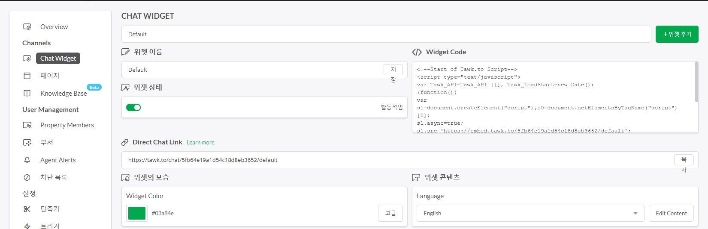

뒤로가기
배운 내용
동영상 삽입
댓글 기능
채팅 기능
웹 사이트 방문자 분석기
CSS활용(11/24)
JavaScript활용(11/30)
동영상 삽입_"iframe""코드 활용
동영상 삽입 방법 (예)유튜브 동영상 - 원하는 동영상 검색
- 동영상 화면 위에 마우스 오른쪽 버튼 클릭
- 소스코드 복사
- 편집기에 복사한 소스코드 붙여넣기
*해당 동영상은 제가 보고 싶어서 올린 것입니다.
댓글 기능_disqus.com 활용
댓글 기능은 disqus.com 사이트의 코드를 그대로 붙여왔습니다. 이 기능은 해당 페이지 하단에서 확인 가능합니다.

채팅 기능_tawk.to 활용_11/23 현재 확인 필요
채팅 기능은 tawk.to 사이트의 코드를 그대로 붙여왔습니다. 이 기능은 해당 페이지 우측 하단에서 확인 가능합니다.

웹 사이트 방문자 분석기_구글 애널리틱스 활용_11/23 현재 확인 필요
방문자 분석기는 구글 애널리틱스를 활용하였습니다. 해당 코드는 관리 > 데이터 스트림 > 웹스트림 선택 > 태그하기에 대한 안내 > 전체사이트 태그 를 통해 확인할 수 있습니다. head코드에 붙여서 활용할 수 있습니다.

CSS활용
CSS의 도입 이유
- HTML이 정보에 집중할 수 있도록 디자인의 기능을 CSS로 분리함
- CSS를 통해 디자인 하는 것이 HTML로 디자인 하는 것보다 편리하기 때문에

CSS 그리드 활용
JaaScript활용
- 자바스크립트는 사용자와 상호작용하는 언어이다.
- 웹브라우저는 한번 화면에 출력되면 자기 자신을 바꿀 수 없지만 자바스크립트를 이용하면 html을 제어할 수 있다.
- 시간 순서에 따라 웹브라우저의 여러 기능이 실행될 수 있도록 프로그램이라는 형태를 띄고 있음